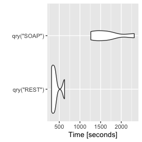

vignettes/supported-queries.Rmd
supported-queries.RmdThe following vignette outlines the different types of queries that have been documented and tested. These are the “supported” query types that the {salesforcer} package currently handles. If you run into an issue, please submit the issue HERE in the GitHub repository so that we can fix or add your query type to this list. Thank you!
Note: Salesforce’s proprietary form of SQL called SOQL (Salesforce Object Query Language) is a powerful tool that allows you to return the fields of records in almost any object in Salesforce. This includes standard objects like Accounts, Contacts, and Tasks along with any custom objects and custom fields created in your Org. You are encouraged to use Bulk APIs when:
If you are not familiar with SOQL, then please consider reading the following resources:
First, load the {salesforcer} package and login. There are two ways to authenticate: 1) OAuth 2.0 (SSO) and 2) Basic Username-Password. It is recommended to use OAuth 2.0 so that passwords do not have to be embedded in scripts or environment variables. By default, OAuth 2.0 stores the user’s credentials in a locally cached file entitled “.httr-oauth-salesforcer” in the current working directory and will be refreshed automatically when the session expires.
library(dplyr, warn.conflicts = FALSE) library(salesforcer) sf_auth()
The default API for the sf_query() function is the REST API because it is both fast and flexible. Every effort has been made so that the format of the results from the REST and SOAP APIs is exactly the same. The only difference will be speed. The REST API uses JSON, which can generally be processed more quickly than XML used in the SOAP API.
soql <- "SELECT Id, FirstName, LastName FROM Contact LIMIT 10" queried_records <- sf_query(soql) # REST API is the default api_type queried_records #> # A tibble: 10 x 3 #> Id FirstName LastName #> <chr> <chr> <chr> #> 1 0033s000013wlpjAAA Test Contact-Create-1 #> 2 0033s000013wlpkAAA Test Contact-Create-2 #> 3 0033s000014AG4HAAW Test Contact-Create-1 #> 4 0033s0000149ZoCAAU Test Contact-Create-1 #> 5 0033s0000149ZoDAAU Test Contact-Create-2 #> # … with 5 more rows queried_records <- sf_query(soql, api_type = "SOAP") queried_records #> # A tibble: 10 x 3 #> Id FirstName LastName #> <chr> <chr> <chr> #> 1 0033s000013wlpjAAA Test Contact-Create-1 #> 2 0033s000013wlpkAAA Test Contact-Create-2 #> 3 0033s000014AG4HAAW Test Contact-Create-1 #> 4 0033s0000149ZoCAAU Test Contact-Create-1 #> 5 0033s0000149ZoDAAU Test Contact-Create-2 #> # … with 5 more rows
Below is a small example to roughly demonstrate the magnitude of the performance difference between the REST and SOAP APIs when querying 1,000 records.
Setup performance test
# create a new account # (if replicating, you may or may not have an external id field in your Org) prefix <- paste0("APerfTest-", as.integer(runif(1,1,99999))) new_account <- sf_create( tibble( Name = "Test Account For Performance Test", My_External_Id__c = prefix, Description = paste0("This is a test account with 1,000 records for ", "testing the performance differences between the ", "SOAP and REST APIs.") ), object_name = "Account" ) # create and associate a thousand new contacts with that account # (again, you may or may not have an external id field in your Org) n <- 1000 prefix <- paste0("CPerfTest-", as.integer(runif(1,1,99999)), "-") new_contacts <- tibble(FirstName = rep("Test", n), LastName = paste0("Query-Vignette", 1:n), test_number__c = 999.9, AccountId = rep(new_account$id, n), My_External_Id__c=paste0(prefix, 1:n)) new_contacts_res <- sf_create(new_contacts, "Contact", api_type = "Bulk 2.0")
Performance test
qry <- function(api_type){ sf_query( sprintf("SELECT Id, Name, Owner.Id, (SELECT Id, LastName, Owner.Id FROM Contacts) FROM Account WHERE Id = '%s'", new_account$id), api_type = api_type ) } res <- microbenchmark::microbenchmark( qry("REST"), qry("SOAP"), times = 5, unit = "s" ) res #> Unit: seconds #> expr min lq mean median uq max neval #> qry("REST") 3.907048 3.970231 4.078336 4.028972 4.073535 4.411894 5 #> qry("SOAP") 18.448496 18.553716 19.126748 18.724751 18.861404 21.045371 5 suppressWarnings(suppressMessages( ggplot2::autoplot(res) + ggplot2::scale_y_continuous(name="Time [seconds]", n.breaks=6) ))

As seen in the limited test above, the REST API can be anywhere from 4-6x faster than the SOAP API for a query on 1,000 contact records associated with a single Account. Breaking up the number of records returned into smaller batches by setting QueryOptions = list(batchSize = 200) typically does not affect this result very much but it also depends on the number of fields in the query. For the REST API the default is 2,000 records per batch with a minimum of 200 and maximum of 2,000. For the SOAP API the default is 500 records per batch. For both APIs it is important to note that there is no guarantee that the requested batch size is the actual batch size. Changes are made as necessary to maximize performance. For example, the SOAP API states “batch size will be no more than 200 if the SOQL statement selects two or more custom fields of type long text”. The REST API mentions that the limit imposed by Salesforce’s app servers is around 20,000 characters which can cause batches to be smaller. In short, it’s generally okay to use the default batch sizes since Salesforce may optimize over your specified batch size anyways.
A general rule of thumb for using the Bulk APIs (Bulk 1.0 and Bulk 2.0) for queries is anytime you need to retrieve more than 10,000 records. The main reasons to not use the Bulk APIs are twofold. First, they do not support complex relationship queries or aggregate queries. If you need to write a nested relationship or aggregate query involving a large number of records you may be tempted to use the REST API. However, it is recommended to perform two or more separate bulk queries that retrieve the records you need and then join or aggregate the results in R.
# nested relationship query # (supposed to return the id and first name of all contacts on each account) try( sf_query( "SELECT Id, Name, (SELECT Id, FirstName FROM Contacts) FROM Account", api_type = "Bulk 2.0" ) ) #> Request failed [400]. Retrying in 1.5 seconds... #> Request failed [400]. Retrying in 2.7 seconds... #> Error : API_ERROR: Aggregate Relationships not supported in Bulk V2 Query with CSV content type # aggregate query # (supposed to return the count of contacts per account) try( sf_query( "SELECT Account.Id, Count(Name) contacts_n FROM Contact GROUP BY Account.Id", api_type = "Bulk 2.0" ) ) #> Request failed [400]. Retrying in 1 seconds... #> Request failed [400]. Retrying in 1 seconds... #> Error : API_ERROR: Aggregate Relationships not supported in Bulk Query
The two queries above were trying to pull all the contacts for each account and then get a count of how many contacts there are per account. If you have a lot of records, using the REST API to return these results may not be feasible. Even though the Bulk APIs cannot handle the same query, they can pull down massive amounts of data quickly. In this case you can pull down all of the Contact records and all of the Account records and then perform the calculation using dplyr, like so:
contacts <- sf_query("SELECT Id, FirstName, Account.Id FROM Contact", api_type = "Bulk 2.0") accounts <- sf_query("SELECT Id, Name FROM Account", api_type = "Bulk 2.0") nested_query_recs <- accounts %>% left_join(contacts %>% rename(`Contact.Id` = Id, `Contact.FirstName` = FirstName), by = c("Id" = "Account.Id")) nested_query_recs #> # A tibble: 1,315 x 4 #> Id Name Contact.Id Contact.FirstNa… #> <chr> <chr> <chr> <chr> #> 1 0013s00000zFdu… KEEP Test Account With Chil… 0033s000012Nkzw… KEEP #> 2 0013s00000zFdu… KEEP Test Account With Chil… 0033s000012Nkzx… KEEP #> 3 0013s00000zFdu… KEEP Test Account With Chil… 0033s000012Nkzy… KEEP #> 4 0013s00000zFdu… KEEP Test Account With Chil… 0033s000012Nkzz… KEEP #> 5 0013s00000zFdu… KEEP Test Account With Chil… 0033s000012Nl00… KEEP #> # … with 1,310 more rows aggregate_query_recs <- nested_query_recs %>% group_by(Id) %>% summarize(.groups = 'drop', contacts_n = sum(!is.na(Contact.Id))) aggregate_query_recs #> # A tibble: 12 x 2 #> Id contacts_n #> <chr> <int> #> 1 0013s00000zFdugAAC 300 #> 2 0013s00000zFgA6AAK 0 #> 3 0013s000011K0xmAAC 999 #> 4 0016A0000035mJ4QAI 2 #> 5 0016A0000035mJ5QAI 1 #> # … with 7 more rows
The second reason to not use the Bulk APIs is that there is a performance overhead associated with every bulk (asynchronous) job that involves checking the status of the job until it succeeds or fails before retrieving the results.
The example below is provided so that you can take this code as an example to run your own performance test of queries that return 10K, 100K, 1M+ records to see where the Bulk APIs outperform the REST API.
qry_compare <- function(api_type){ soql <- sprintf("SELECT Id, LastName, Account.Id, Account.Name, Owner.Id FROM Contact WHERE Account.Id = '%s'", new_account$id) sf_query(soql, api_type = api_type) } res <- microbenchmark::microbenchmark( qry_compare("REST"), qry_compare("Bulk 1.0"), qry_compare("Bulk 2.0"), times = 5, unit = "s" )
Note that the Bulk 1.0 API requires users to specify the target object along with their submitted SOQL. This is because it is needed when creating the bulk job that will manage and execute the query.
queried_records <- sf_query(soql, api_type = "Bulk 1.0") #> Guessed 'Contact' as the object_name from supplied SOQL. #> Please set `object_name` explicitly if this is incorrect because it is required by the Bulk APIs.
As you can see above the {salesforcer} package will try to infer the object in the query if not explicitly provided. If it does not guess correctly, then please specify.
Cleanup after performance tests
By keeping track of the account ids used in our tests, it is fairly easy to find and delete these test records from our Org to save space.
# cleanup performance test Contact records ... contacts_to_delete <- sf_query( sprintf("SELECT Id FROM Contact WHERE Account.Id = '%s'", new_account$id) ) sf_delete(contacts_to_delete$Id, "Contact", api_type="Bulk 2.0") #> # A tibble: 999 x 4 #> Id sf__Id sf__Created sf__Error #> <chr> <chr> <lgl> <lgl> #> 1 0033s000014B3XAAA0 0033s000014B3XAAA0 FALSE NA #> 2 0033s000014B3XBAA0 0033s000014B3XBAA0 FALSE NA #> 3 0033s000014B3WxAAK 0033s000014B3WxAAK FALSE NA #> 4 0033s000014B3WyAAK 0033s000014B3WyAAK FALSE NA #> 5 0033s000014B3WzAAK 0033s000014B3WzAAK FALSE NA #> # … with 994 more rows # ... and finally delete the account sf_delete(new_account$id) #> # A tibble: 1 x 2 #> id success #> <chr> <lgl> #> 1 0013s000011K0xmAAC TRUE
Salesforce supports retrieving fields from related objects when querying another object. This is similar to performing a JOIN in SQL, but without having to specify the join keys because Salesforce already knows the relationship between the two objects. There are two types of relationship queries (1. child-to-parent lookups and 2. parent-to-child nested queries) detailed in the sections below.
The first type of relationship query and the most common is child to parent. For example, the Contact object (child) to their parent, the Account object. In order to pull down parent object fields with your child record query, you just need to prefix any fields from the related object by concatenating the name of the object with the field name separated by a period. In the example below we are retrieving all Contact object records that have a relationship to an Account.
# child-to-parent relationship (e.g. Account.Name from Contact record) sf_query( "SELECT Id, FirstName, Account.Name FROM Contact WHERE Account.Id != null" ) #> # A tibble: 315 x 3 #> Id FirstName Account.Name #> <chr> <chr> <chr> #> 1 0036A000002C6MWQA0 Rose Edge Communications #> 2 0036A000002C6MXQA0 Sean Edge Communications #> 3 0036A000002C6MfQAK Babara Express Logistics and Transport #> 4 0036A000002C6MgQAK Josh Express Logistics and Transport #> 5 0036A000002C6MhQAK Jane University of Arizona #> # … with 310 more rows
Sometimes you may notice that the requested relationship fields do not appear in the query results. This is because the SOAP and REST APIs do not return any related object information if it does not exist on the record and there is no reliable way to extract and rebuild the empty columns based on the query string. In the example below, if there were Account information an additional column titled "Account.Name" would appear in the results.
# child-to-parent relationship (e.g. Account.Name from Contact record) sf_query( "SELECT Id, FirstName, Account.Name FROM Contact WHERE Account.Id = null" ) #> # A tibble: 592 x 2 #> Id FirstName #> <chr> <chr> #> 1 0033s000013wlpjAAA Test #> 2 0033s000013wlpkAAA Test #> 3 0033s000014AG4HAAW Test #> 4 0033s0000149ZoCAAU Test #> 5 0033s0000149ZoDAAU Test #> # … with 587 more rows
Note, that the Bulk 1.0 and Bulk 2.0 APIs will return "Account.Name" as a column of all NA values for this query because they return results differently.
Finally, one aspect to note is that the Bulk 2.0 API does not support child-to-parent-grandparent relationships as seen in the example below:
Instead of “looking up” a related field, users can write queries that retrieve the individual records related to a parent. For example, if you would like all of the Accounts and their Contacts you can write the query like so:
sf_query( "SELECT Id, Name, (SELECT Id, FirstName FROM Contacts) FROM Account" ) #> # A tibble: 316 x 4 #> Id Name Contact.FirstName Contact.Id #> <chr> <chr> <chr> <chr> #> 1 0013s00000zFgA… KEEP Test Account With Chil… <NA> <NA> #> 2 0013s00000zFdu… KEEP Test Account With Chil… KEEP 0033s000012Nl0… #> 3 0013s00000zFdu… KEEP Test Account With Chil… KEEP 0033s000012Nkz… #> 4 0013s00000zFdu… KEEP Test Account With Chil… KEEP 0033s000012Nkz… #> 5 0013s00000zFdu… KEEP Test Account With Chil… KEEP 0033s000012Nkz… #> # … with 311 more rows
At first glance this query may appear the same as a lookup query on the Contact object that includes the account id and name. However, the small difference is that every Account is included, regardless of whether or not they have a Contact. This can be helpful when you want to ensure a query contains all of the parent records and their child records, if they exist. Also, note that the plural object name is used inside the nested query (“Contacts” instead of “Contact”).
Finally, a parent-to-child nested query can also contain a child-to-parent lookup relationship within it. Below is an example where the Owner Id on the Contact is included so you can know who is responsible for the Contacts under each Account.
sf_query( "SELECT Name, Owner.Id, (SELECT Id, FirstName, Owner.Id FROM Contacts) FROM Account" ) #> # A tibble: 316 x 5 #> Name Contact.FirstName Contact.Id Contact.Owner.Id Owner.Id #> <chr> <chr> <chr> <chr> <chr> #> 1 KEEP Test Accoun… <NA> <NA> <NA> 0056A00000… #> 2 KEEP Test Accoun… KEEP 0033s000012N… 0056A000000MPRj… 0056A00000… #> 3 KEEP Test Accoun… KEEP 0033s000012N… 0056A000000MPRj… 0056A00000… #> 4 KEEP Test Accoun… KEEP 0033s000012N… 0056A000000MPRj… 0056A00000… #> 5 KEEP Test Accoun… KEEP 0033s000012N… 0056A000000MPRj… 0056A00000… #> # … with 311 more rows
If you are having an issue with a query please submit in the {salesforcer} GitHub repository at: https://github.com/StevenMMortimer/salesforcer/issues. As a maintainer, queries are tough to debug because every Salesforce Org is unique. Custom objects or relationships created in your Salesforce Org may be different or even impossible to test in another Org. When filing your issue please make an attempt to understand the query and debug a little bit on your own. Here are a few suggestions:
Slightly modify your function call to sf_query() to observe the results. Here are a few prompting questions that may assist you:
What do you see when you set verbose=TRUE argument?
What happens if you change the control argument, specifically the batch size?
What happens if you try using a different API (e.g. “SOAP” vs “REST” or “Bulk 1.0” vs “Bulk 2.0”)?
What happens if you change your query slightly?
Do you need a parent-to-child nested relationship query or will a child-to-parent lookup suffice?
Check out Salesforce’s Workbench tool to see how it builds out queries.
Double check Salesforce’s SOQL reference guide to see whether your query is supported or limited in some way.
Review query unit tests at: https://github.com/StevenMMortimer/salesforcer/blob/main/tests/testthat/test-query.R. These unit tests were written to cover a variety of use cases and to track any changes made between newly released versions of the Salesforce API (typically 4 each year). These tests are an excellent source of examples that may be helpful in troubleshooting your own query.
Roll up your sleeves and dive into the source code for the {salesforcer} package. The main scripts to review are: